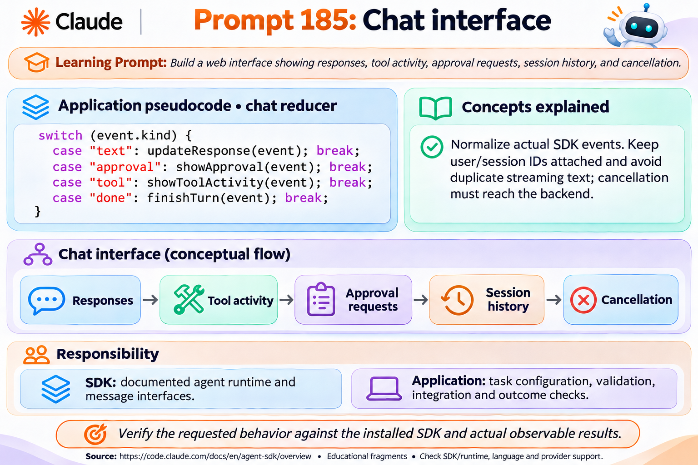
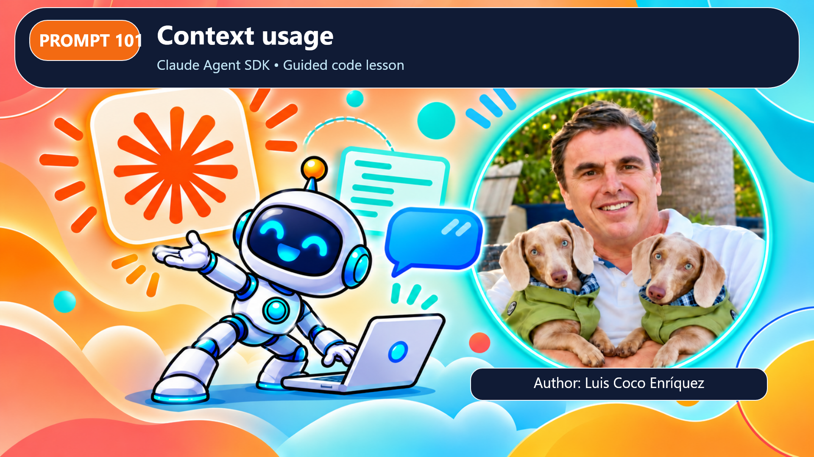

YOUR WORKBENCH
Run it. Inspect the evidence.
Ready to run. No results have been generated.
Observed checks
Result
Actual events and measurement scope
UNDER THE HOOD
Read the implementation
Your lesson map

Course cover

YOUR WORKBENCH
Ready to run. No results have been generated.
UNDER THE HOOD

